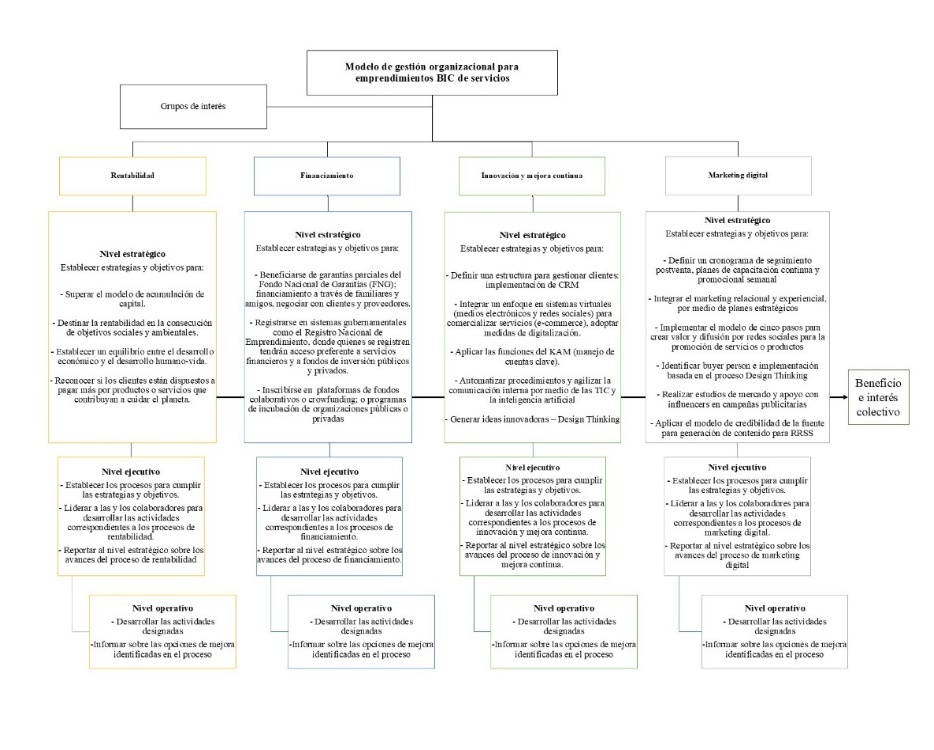
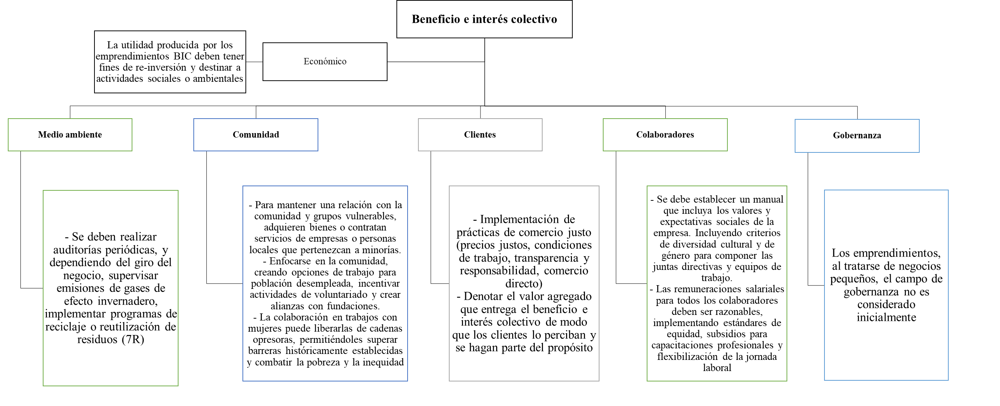

Resumen.
Se propone un modelo de gestión sostenible para emprendimientos B Corp del sector servicios, que integra principios de innovación, digitalización, rentabilidad, financiamiento y valor compartido. Como diseño metodológico se utilizó una revisión sistemática de literatura. La búsqueda fue con Google Académico mediante una cadena de búsqueda construida con operadores booleanos y truncadores, se obtuvieron 477 resultados iniciales. Tras aplicar criterios de inclusión y exclusión, la muestra final fue de 21 artículos. La información se organizó de tal forma que permitió identificar patrones conceptuales y ejes de gestión relevantes para el modelo propuesto. Las conclusiones evidencian la necesidad de fortalecer la articulación entre los niveles (estratégico, ejecutivo y operativo), promover la innovación, digitalización, acceso al financiamiento y consolidar una visión empresarial de triple impacto alineado con la sostenibilidad en la dimensión social, ambiental y económica. El modelo planteado contribuye a decisiones más coherentes, sostenibles y orientadas al impacto colectivo.
Palabras clave:
Modelo de gestión sostenible; sostenibilidad empresarial; estrategia organizacional; innovación empresarial; desempeño organizacional.
Abstract.
A sustainable management model is proposed for B Corp ventures in the service sector, integrating principles of innovation, digitization, profitability, financing, and shared value. A systematic literature review was used as methodological design. The search was conducted using Google Scholar with a search string constructed with Boolean operators and truncators, yielding 477 initial results. After applying inclusion and exclusion criteria, the final sample consisted of twenty-one articles. The information was organized in such a way as to identify conceptual patterns and management axes relevant to the proposed model. The conclusions highlight the need to strengthen coordination between levels (strategic, executive, and operational), promote innovation, digitization, and access to financing, and consolidate a triple-impact business vision aligned with sustainability in the social, environmental, and economic dimensions. The proposed model contributes to more coherent, sustainable decisions oriented toward collective impact.
Introducción
La participación de emprendimientos en el sector de servicios supera a la de otros sectores clave como el comercio, la agricultura, las industrias manufactureras, la construcción y la minería, lo que indica una notable concentración de la productividad emprendedora en dicho ámbito (Coba, 2019). Este sector engloba una amplia gama de actividades como construcción, salud, educación, transporte, suministros de servicios básicos, financieras y profesionales, entre otras (Paredes et al., 2019; Paolini & Odriozola, 2019; Indio & Soriano, 2021). Sin embargo, como Salgado (2023) identifica existen muchos emprendimientos en dicho sector que no se sostienen en el tiempo debido a limitaciones en la gestión de cuatro ejes fundamentales: rentabilidad; financiamiento; innovación; y, marketing digital.
Específicamente, es la ausencia de un modelo de gestión que integra los procesos financieros, publicitarios y de productividad lo que contribuye a que estos negocios tengan una corta permanencia en el mercado (Loor et al., 2024). Las estadísticas reflejan esta problemática, con un 40 % de los emprendedores cerrando por falta de rentabilidad, un 22 % debido a la insuficiencia de financiamiento, y un 20% enfrentando problemas estructurales (Orozco, 2024). Estos datos destacan la necesidad de un enfoque holístico y estratégico en la gestión de dichos emprendimientos para mejorar sus posibilidades de éxito.
Adicionalmente, la evidencia indica que los emprendedores no aplican un régimen sistemático que integre elementos y actividades productivas y administrativas. Esta sinergia es esencial para estructurar, comprender y representar la realidad organizacional de manera simplificada (Rojas & Chávez, 2024; Meyli et al., 2023). En este contexto, Julio (2020) propone tres niveles de gestión para una correcta administración: ejecutivo, operativo y estratégico.
Con base en lo mencionado, se sugiere reconocer la relevancia de la gestión organizacional, pero también de los criterios de sustentabilidad para asegurar la permanencia en el mercado de los emprendimientos. Para este efecto, se considera la estructura propuesta por las B Corp que, a diferencia de las empresas tradicionales no solo persiguen el éxito económico, sino también buscan generar un impacto positivo en la sociedad y el medioambiente (Fierro, 2023).
Proveer a los emprendimientos en el área de servicios, de una propuesta de modelo de gestión sostenible aporta a que se promueva su permanencia a largo plazo, favoreciendo a los procesos internos y proporcionando conocimientos valiosos en la administración, así como también, en gobernanza, capital laboral, comunidad, clientes y medio ambiente.
Es así como el objetivo de este artículo es proponer un diseño de un modelo de gestión sostenible para emprendimientos basados en la estructura de las B Corp para el sector de servicios que permite interrelacionar las actividades fundamentales dentro de un emprendimiento, en los tres niveles (jerárquico, administrativo y operativo), tomando como referencia los procesos de innovación; rentabilidad; financiamiento; y, marketing digital.
Marco teórico
El emprendimiento, tradicionalmente, es concebido como el proceso de crear y desarrollar un negocio con el objetivo de ofrecer soluciones innovadoras y generadoras de valor, asumiendo riesgos y liderando los procesos en un entorno competitivo (Duarte, 2007). Lederman et al. (2015) señalan que, en Latinoamérica, el emprendimiento a menudo se asocia con la creación de empresas sin necesariamente considerar la innovación e identifican cuatro factores principales que influyen en este argumento: la baja competencia en los mercados, la brecha en el capital humano, las restricciones en el acceso al crédito y el entorno normativo.
Según el Global Entrepreneurship Monitor (2024), el emprendimiento juega un papel determinante en el desarrollo y crecimiento económico de cualquier sociedad. Permite diversificar la economía, y reducir la dependencia en sectores como los de extracción de recurss naturales no renovables al incentivar la creación de nuevas empresas basadas en la innovación, el conocimiento y la sostenibilidad. Además, fomenta la generación de empleo, la competitividad y la resiliencia económica al promover soluciones locales a desafíos sociales y ambientales, contribuyendo así a un desarrollo más inclusivo y sostenible. Es a partir de este proceso que la actividad emprendedora es propia de las personas que crean negocios para enfrentar problemas económicos y de desempleo (Salgado, 2023).
Sin embargo, los emprendedores enfrentan una serie de desafíos y barreras que pueden obstaculizar el éxito de sus iniciativas. Uno de los principales obstáculos es la falta de acceso a financiamiento, debido a un entorno financiero restrictivo, sobre todo si el emprendedor se encuentra en etapa temprana; barrera burocracia, propia de los obstáculos que se derivan de un complicado andamiaje jurídico; barrera de capacidades como la escasa educación en materia de emprendimiento; barrera de mercado, al existir escasa investigación de mercado o dificultad para encontrar nuevos productos; barrera de gestión empresarial, que se traduce en falta de planificación; y, barreras personales como miedo al fracaso, (Andrade, 2012; Awatara, 2018; Robichaud et al., 2024).
Por otro lado, las B Corp son un modelo aplicable a cualquier tipo de organización ya sea una empresa, microempresa o emprendimiento, en cualquier actividad o región del mundo (Álvarez et al., 2021), buscan alcanzar objetivos sociales y medioambientales mientras generan rentabilidad, logrando un triple impacto positivo: económico, social y ambiental (Stubbs, 2017). Además, están alineados con los criterios ASG (Ambiental, Social y de Gobernanza), que son utilizados para evaluar la sostenibilidad y el impacto ético de una organización.
Los criterios ambientales examinan cómo una empresa gestiona su impacto en el medio ambiente, incluyendo la gestión de residuos, las emisiones de gases de efecto invernadero y el uso de recursos naturales; los sociales se centran en las relaciones de las empresas con empleados, proveedores, clientes y comunidades, abarcando temas como condiciones laborales, diversidad e inclusión, derechos humanos y el impacto social; y los de gobernanza analizan la dirección y gestión de la empresa, evaluando la estructura del consejo de administración, la ética empresarial, la transparencia, y las políticas contra la corrupción (De Souza Barbosa et al., 2023).
Estos criterios proporcionan una visión integral del desempeño y la sostenibilidad de una empresa más allá de sus resultados financieros (Chen et al., 2023; Correa & Vásquez, 2020; Morales, Santiesteban & Monzón, 2019). Además, con relación a las B Corp la legislación de cada país establece requisitos adicionales para regular aspectos como la transparencia y los reportes obligatorios para garantizar que las sociedades cumplan con sus objetivos sociales, ambientales y de gobierno corporativo. La integración de estos elementos asegura que las B Corp no solo persigan objetivos económicos, sino que también contribuyan de manera significativa al desarrollo sostenible y a la creación de valor para la sociedad y el medio ambiente.
En América Latina, las B Corp han tomado gran importancia y se han integrado en el marco jurídico de varios países como en Ecuador, Perú, Colombia, Brasil, Argentina, Chile y Uruguay (Fierro, 2023), tomando como base el modelo de las corporaciones estadounidenses (Moscoso et al., 2023). Con este argumento, son tres los componentes que son replicados en organizaciones latinoamericanas: régimen de transparencia y reporte obligatorio; adicional a la actividad propia del giro de negocio, un propósito de beneficio ambiental y social; y, la variación del régimen de responsabilidad (Connolly et al. 2020).
Un modelo de gestión organizacional se define como un conjunto de principios, prácticas y procesos diseñados para estructurar y orientar las actividades y decisiones dentro del negocio con el fin de alcanzar los objetivos planteados (Huertas et al., 2020). Este modelo actúa como un marco conceptual guía para planificar, coordinar y controlar los recursos y esfuerzos de la organización. Además, asegura que las áreas de la empresa como planificación estratégica, estructura organizativa, sistemas de control y procesos productivos, trabajen de manera coherente hacia metas comunes. Dentro de estos se encuentra el marketing digital, la innovación, la rentabilidad, el financiamiento y la estrategia organizacional. Conjuntamente, el modelo proporciona una base para evaluar el desempeño de los actores y la adaptación al entorno por medio de la innovación y la mejora continua; en esencia, crea un entorno estructurado que favorece la eficiencia, efectividad e innovación dentro del negocio (Cañar e Hidalgo, 2021).
En un sentido más estricto, Julio (2020) propone que la gestión organizacional es la dinámica mediante la cual se puede gerenciar y administrar los procesos operativos o productivos, mismos que se encuentran dispuestos en tres niveles: nivel operativo, ejecutivo y estratégico.
El nivel operativo se centra en la ejecución de las tareas diarias y la administración de los recursos inmediatos de la organización. Aquí se llevan a cabo los procesos operativos donde se concentra la mano de obra y se aplican las estrategias previamente definidas. Los colaboradores en este nivel se encargan de realizar actividades específicas y reiterativas, utilizando herramientas administrativas y tecnologías de la información para garantizar la efectividad en la productividad. Estos procesos son fundamentales para mantener la continuidad y estabilidad en la gestión diaria del negocio, asegurando que las actividades se realicen conforme a los estándares establecidos y se alcancen los objetivos (Ronda, 2004).
En el nivel ejecutivo, la atención es dirigida a la coordinación y supervisión de las operaciones diarias y, la implementación de las decisiones estratégicas formuladas por la alta dirección (nivel estratégico). Los encargados del nivel ejecutivo (gerentes) tienen la responsabilidad de la planificación y la asignación organizada de recursos necesarios para alcanzar los objetivos estratégicos. Este nivel actúa como un puente entre la estrategia organizacional y las actividades operativos, garantizando que las directrices establecidas se traduzcan en acciones concretas y eficientes. Los procesos de toma de decisiones en este nivel implican la evaluación del rendimiento operativo, el ajuste de las estrategias según sea necesario y el aseguramiento de que los recursos se utilicen de manera óptima para lograr los resultados planeados (Cedeño et al., 2019).
El nivel estratégico es el más alto en la jerarquía organizacional y se enfoca en la formulación de políticas y metas a largo plazo de la empresa. Los directivos y ejecutivos de alto nivel como los presidentes, gerentes generales, CEO y miembros del consejo directivo se encargan de desarrollar el propósito, misión, visión, estrategias generales y objetivos de la organización. Los procesos de toma de decisiones en este nivel incluyen el análisis del entorno competitivo y la identificación de oportunidades y amenazas, y la definición de los objetivos estratégicos que guiarán la dirección del negocio, emprendimiento o empresa. La estructura organizativa en este nivel define la asignación de autoridad y la coordinación entre las distintas áreas estratégicas, asegurando que la empresa pueda adaptarse a los cambios del mercado y alcanzar sus metas a largo plazo de manera efectiva (García et al., 2017).
En lo que se refiere a los ejes previamente definidos, la rentabilidad es un indicador clave en la evaluación del desempeño económico de una organización ya que permite identificar la capacidad de generar beneficios en relación con el capital invertido por sus dueños o accionistas (Morillo, 2001). Este concepto se fundamenta en la relación entre el beneficio neto obtenido y el capital propio, lo que permite a los inversionistas analizar la eficiencia en el uso de los recursos financieros. La rentabilidad no es solo una herramienta para medir el éxito, netamente económico, de una estrategia organizacional, sino que también entrega una base para la toma de decisiones informadas sobre inversiones, financiamiento y distribución de utilidades (Contreras, 2006; Martín, 2024).
El financiamiento se refiere al proceso de proporcionar fondos económicos o capital a una organización, proyecto o emprendimiento para cubrir gastos, inversiones o actividades operativas. Existen diversas fuentes de financiamiento, que pueden ser internas, como utilidades retenidas, o externas: préstamos bancarios, emisiones de acciones o bonos (León & Schreiner, 1998). Los indicadores de financiamiento proveen una clara visión para los gerentes, inversionistas y analistas evaluar la solvencia, liquidez y la eficiencia del uso de capital de una empresa, facilitando la toma de decisiones informadas sobre su financiamiento y operación (Alay, 2020).
La innovación permite a las empresas adaptarse a un entorno competitivo en constante cambio y que se mantenga su relevancia en el mercado. La innovación se refiere a la introducción de nuevos productos, servicios, procesos o modelos de negocio que generan valor; mientras que, la mejora continua implica el esfuerzo constante por optimizar y perfeccionar los procesos existentes para aumentar la eficiencia y la calidad (Carrascoa, Peiró & Segarra, 2012). La teoría del ciclo de vida de la innovación, propuesta por Schumpeter, destaca cómo las innovaciones disruptivas pueden transformar industrias y crear nuevas oportunidades de mercado (Montoya, 2004).
Finalmente, el marketing digital se define como el conjunto de estrategias, técnicas y metodologías que utilizan medios digitales para promocionar productos y servicios, interactuar con los clientes y construir relaciones comerciales a largo plazo. Su evolución se ha visto marcada por el avance de la tecnología y el cambio en el comportamiento del consumidor (Bricio, Calle & Zambrano, 2018), las métricas y analíticas digitales son fundamentales para evaluar el rendimiento de las campañas de marketing y a su vez, comprender el comportamiento de la clientela.
Por medio de herramientas de analítica web, como Google Analytics, las organizaciones pueden medir indicadores clave de rendimiento (KPIs), como el tráfico del sitio, la tasa de conversión, etc. Estas métricas permiten a los especialistas identificar qué estrategias serían las más efectivas y cuáles se deberían reformular. Además, el análisis de datos en tiempo real permite a las organizaciones tomar decisiones informadas y optimizar sus campañas de manera continua, mejorando así su capacidad para alcanzar sus objetivos comerciales (Pitre, Builes & Hernández, 2021).
Metodología
La investigación es de tipo cualitativa y el diseño metodológico es una revisión sistemática de la literatura (RSL), entendida como un diseño observacional y retrospectivo que sintetiza metodologías, resultados y conclusiones de diversos autores a partir de investigaciones primarias (Beltrán, 2005; Manterola et al., 2013). De León-Casillas et al. (2020) precisan que esta revisión debe realizarse mediante un método transparente y prestablecido, que comprende actividades fundamentales como la identificación y búsqueda de artículos, la evaluación de la calidad de la evidencia y, la síntesis de los artículos. A continuación, se describe cada etapa del proceso seguido.
La primera actividad consistió en definir los conceptos clave que sustentan el marco teórico del estudio: emprendimiento, industria de servicios, Sociedades de Beneficio e Interés Colectivo (BIC) y modelo de gestión organizacional. Estos conceptos articulan la base conceptual sobre la que se construyeron la cadena de búsqueda y los criterios de selección. Se utilizó Google Académico como motor de búsqueda para acceder a diferentes bases de datos de revistas científicas. La cadena de búsqueda se construyó con operadores booleanos (AND) y truncadores (*), incorporando los descriptores centrales del estudio: [(emprendimiento) "B Corp" (servicios) ("modelo de gestión")]. Esta estrategia arrojó 477 resultados iniciales. La temporalidad fue delimitada entre 2020 y 2024. El límite inferior se justifica en que 2020 es el año en que Ecuador promulgó la Ley Orgánica de Emprendimiento e Innovación, norma que incorpora por primera vez en el ordenamiento jurídico nacional la figura de las Sociedades de Beneficio e Interés Colectivo.
Para garantizar la pertinencia y calidad del corpus analizado, se establecieron criterios de inclusión y exclusión que rigieron el proceso de selección. En cuanto a los criterios de inclusión, se consideraron únicamente artículos científicos publicados en revistas arbitradas o con revisión por pares, pertenecientes al área de conocimiento de administración y negocios, publicados en el período comprendido entre 2020 y 2024, y que abordaran al menos uno de los ejes temáticos definidos para el modelo: emprendimiento, rentabilidad, financiamiento, innovación, marketing digital, modelo de gestión y/o sociedades B Corp o de Beneficio e Interés Colectivo (BIC).
Respecto a los criterios de exclusión, fueron descartados: los documentos que no correspondían al tipo de artículo científico, tales como libros, tesis de investigación, artículos periodísticos, memorias de conferencias, ponencias, sitios web, blogs, documentos alojados en academia.edu, informes de investigación y reportes gubernamentales; los documentos que, si bien abordaban alguno de los descriptores de búsqueda, se encontraban enfocados en ciencias de la naturaleza, salud, ingeniería u otras áreas disciplinares ajenas a la administración y los negocios; los artículos publicados fuera del rango temporal 2020–2024; los registros duplicados en los resultados de búsqueda; los artículos sin acceso al texto completo; y los artículos que, tras la lectura completa, no aportaban información sustantiva a ninguno de los ejes del modelo propuesto.
Se realizó una revisión preliminar de los 477 resultados, centrada en la lectura del título, resumen, palabras clave y área de conocimiento de cada registro. Este análisis permitió identificar y descartar artículos que no correspondían al tipo documental definido y aquellos sin relación temática con los ejes del modelo. Asimismo, se descartaron trabajos enfocados en disciplinas ajenas a la administración y los negocios, como ciencias de la naturaleza, salud o ingeniería, aunque abordaran tangencialmente alguno de los descriptores de búsqueda. Tras esta fase de filtrado, se identificaron 47 artículos potencialmente elegibles.
Los 47 artículos preseleccionados fueron leídos en su totalidad por cada uno de los autores. En esta etapa se excluyeron aquellos a los que no fue posible acceder al texto completo y los que, tras la lectura exhaustiva, no aportaban información sustantiva a ninguno de los ejes del modelo de gestión: rentabilidad, financiamiento, innovación, marketing digital, estrategia organizacional y beneficio e interés colectivo. Como resultado, la muestra final quedó conformada por 21 artículos científicos, organizados en función de los ejes definidos y con base en los estudios de Salgado (2023) y Loor et al. (2024).
Los 21 artículos seleccionados fueron incorporados a una matriz de síntesis que recogió el año de publicación, título, palabras clave, idea clave, vínculo bibliográfico y cita (Anexo 1). Posteriormente, para organizar la información en función de los ejes que componen el modelo de gestión, se aplicó la metodología de análisis de contenido que, como lo detalla Fernández (2002), ayuda a identificar patrones, temas, significados y tendencias dentro de un conjunto de datos, de forma sistemática y objetiva. Cada artículo fue revisado minuciosamente, destacando las ideas aplicables y categorizándolas según los ejes del modelo: rentabilidad, financiamiento, innovación, marketing digital y estrategia organizacional, con el beneficio e interés colectivo como eje transversal.
Con toda la información recopilada, clasificada y sistematizada, se redactó la propuesta del modelo de gestión organizacional para emprendimientos B Corp del sector de servicios, estructurada en los ejes seleccionados y jerarquizada en los tres niveles organizacionales: estratégico, ejecutivo y operativo.
Resultados
A continuación, se presenta la tabla 1 que presenta la síntesis de las ideas clave de cada uno de los 21 artículos, organizadas de acuerdo con su aplicabilidad en cada uno de los ejes del modelo de gestión propuesto: rentabilidad, financiamiento, innovación y mejora continua y marketing digital; considerando los aportes del B Corp.
Tabla 1.
Matriz de sistematización
| Art | Idea aplicable |
|---|---|
| Rentabilidad | |
| 01 | Las empresas de interés común buscan maximizar los intereses de todos los grupos de interés de una organización, tanto internos como externos, con el fin de trascender el modelo tradicional de acumulación de capital hacia la creación de valor compartido (pág. 2). |
| 01 | La estructura de las empresas B permite que dichas organizaciones se enfoquen tanto en la rentabilidad como en el cumplimiento de objetivos sociales y ambientales para aportar al desarrollo sostenible en sus tres dimensiones. (pág. 3) |
| 01 | En el caso de las empresas de interés común, la rentabilidad como tal, pasa de ser el principal objetivo de la organización a convertirse en una herramienta para alcanzar objetivos sociales y ambientales, al mismo tiempo que atiende la materialidad de otros actores claves como son los empleados, proveedores, clientes, la comunidad y el medio ambiente (pág. 6). |
| 02 | Las empresas de interés común incorporan estándares de responsabilidad social y ambiental en sus procesos y gestión. Adicionalmente incorporan principios de transparencia y rendición de cuentas (pág. 6). |
| 02 | Otro elemento para resaltar de las empresas de interés común es la influencia de la bioética personalista, que busca equilibrar el desarrollo económico con el bienestar humano global. Su objetivo es crear condiciones dignas para mitigar problemas sociales, con innovación social y ambiental, sin comprometer la rentabilidad de la organización (pág. 9). |
| 02 | A pesar de sus principios y objetivos, las empresas de interés común se enfrentan con desafíos estructurales al momento de equilibrar su rentabilidad con la gestión de los impactos sociales y ambientales que genera su actividad económica. Para superar esta barrera, la literatura sugiere mejorar el compromiso ético y responsable de los representantes y colaboradores para abordar los conflictos y controversias que surgen (pág. 12). |
| 04 | Existen consumidores dispuestos a pagar más por bienes y servicios de empresas que cuentan con programas de sostenibilidad organizacional o son empresas de interés común (pág. 19). |
| 05 | Los consumidores están dispuestos a pagar el precio que refleje la internalización de las externalidades ambientales y sociales (pág. 3). |
| 05 | Las empresas que aportan al desarrollo sostenible equilibran sus objetivos de rentabilidad con la consecuencia de objetivos sociales, ambientales y de gobernanza (pág. 4). |
| 07 | Las organizaciones que se digitalizan, en el tiempo, tendrán un mejor rendimiento financiero (pág. 12). |
| 12 | En países como Colombia, las empresas de interés común tienen beneficios monetarios y tributarios como el acceso preferente a líneas de crédito del Estado, deducción y excepción de impuestos (pág. 6). |
| Financiamiento | |
| 04 | Con relación a las empresas de interés común, se sugiere que los países desarrollen política pública y normativa que favorezca dicho ecosistema. Por ejemplo, se podría facilitar el acceso a créditos y fondos, promoviendo así inversiones en organizaciones comprometidas con generar un impacto social y ambiental positivo (pág. 9). |
| 05 | Argentina aprobó la Ley de Fomento al Capital Emprendedor que apalanca el financiamiento de crowfunding (pág. 9). |
| 06 | En el caso de Ecuador, se identificaron varios semilleros para emprendedores. Por ejemplo, el Fondo Emprende: Ecuador Productivo, las garantías parciales del Fondo Nacional de Garantías (FNG), la negociación con clientes y proveedores, y el crowdfunding (pág. 6). |
| 06 | Se insiste en la importancia de contar con plataformas de fondos colaborativos, mismos que deben estar regulados por el Estado. Los aportes que se realizan mediante el uso de dichas plataformas pueden ser: donaciones, recompensas, pre-compras, inversión en acciones y financiamiento responsable. Además, al inscribirse en el Registro Nacional de Emprendedores, podrán acceder a programas de promoción comercial en el exterior y acceso a servicios financieros y fondos de inversión públicos y privados (pág.8 y 9). |
| 15 | Realizar una auditoría de gestión contribuye al crecimiento económico de las organizaciones mediante la supervisión de sus procesos administrativos y financieros, facilitando la emisión de recomendaciones orientadas a optimizar la toma de decisiones empresariales (pág, 3). |
| 17 | Las incubadores fomentan la creación y fortalecimiento de nuevos negocios mediante procesos de capacitación y asistencia técnica durante sus cuatro fases: pre-incubación, incubación, pos-incubación y seguimiento. |
| Innovación | |
| 02 | La ciencia, la tecnología y la innovación son aspectos fundamentales para el crecimiento de las organizaciones y el desarrollo de nuevos productos. Sin embargo, se debe considerar los límites éticos, la dignidad humana, la privacidad y la confidencialidad al momento de llevar a cabo las investigaciones para nuevos productos (pág. 7). |
| 03 | Para la sostenibilidad y sostenibilidad de la organización, se debe contar con herramientas que les permita gestionar adecuadamente a sus clientes (pág. 5) Un ejemplo es la implementación de un CRM que ayuda a gestionar, eficientemente, los recursos de una organización y contribuye al rendimiento financiero de una organización al mismo tiempo que crea valor para sus clientes (pág. 6). También se recomienda la incursión en herramientas tecnológicas, como la realidad aumentada para comercializar sus productos (pág. 9) y funciones del KAM para el manejo de cuentas clave (pág. 10). |
| 06 | La tecnología, al proporcionar un acceso amplio a diferentes tipos de herramientas, se convierte en un driver indispensable para los emprendimientos (pág. 16). |
| 07 | Los emprendedores utilizan varios recursos digitales como las redes sociales para comercializar sus productos, esto supone un cambio de paradigma ante la presencia de tiendas físicas que cada vez pierden más mercado .Los países pueden guiarse con los dispuesto en el Índice Digital de Economía y Sociedad de la Unión Europa para mejorar la innovación en cinco dimensiones: conectividad, capital humano, uso de servicios de Internet, integración de tecnología digital y servicios públicos digitales (pág. 5). |
| 09 | La transformación y mejora de las organizaciones, catalizadas por el uso de tecnologías contemporáneas, están intrínsecamente vinculadas con la influencia de las TIC (pág. 7). |
| 09 | Las TIC permiten la automatización de procesos, es así como la transformación digital y el uso de tecnologías es el nuevo estándar para la mejora continua de las organizaciones. Adicionalmente, la inteligencia artificial ayuda a los gestores a resolver problemas complejos lo que mejora la gestión de la organización. (pág. 7, 8) |
| 17 | La metodología del desing thinking está bien valorada entre los emprendedores porque ayuda a generar ideas innovadoras para nuevos mercados (pág. 2). |
| Marketing digital | |
| 03 | La implementación de una estrategia integral de marketing orientada al valor requiere establecer un cronograma de postventa para el seguimiento sistemático de clientes, desarrollar planes de capacitación continua que fortalezcan la fidelización del nicho de mercado definido y ejecutar un plan promocional semanal que dinamice la comercialización de las distintas líneas de productos; todo ello apoyado en el fortalecimiento del sistema digital mediante marketing de contenidos, uso estratégico de redes sociales y la adopción de sistemas integrados de atención al cliente, alineados con un modelo de creación de valor en cinco etapas: comprender el mercado, diseñar estrategias de marketing, desarrollar un programa de marketing integrado y captar valor del cliente. Se sugiere incorporar enfoques de marketing experiencial que activen los sentidos y las conexiones emocionales para influir positivamente en la decisión de compra. (pág. 3, 6, 7, 8). |
| 04 | Se considera como un incentivo de atracción y retención de clientes que las empresas divulguen su compromiso con la sostenibilidad (pág. 18). |
| 06 | Las redes sociales son una herramienta estratégica para que los emprendimientos promocionen sus; permiten la adaptación a nuevos procesos para facilitar la exhibición de productos en línea, el contacto digital con un público más amplio, el asesoramiento personalizado y los pagos mediante transferencias en línea (pág. 5). |
| 07 | La digitalización de pagos es un proceso pivotal para los emprendimientos, más aún si son en línea. (pág. 3) |
| 09 | Las TIC generan cambios significativos en la gestión de las organizaciones. Por ejemplo, facilitan el acceso a recursos de manera eficiente y efectiva, mejora la gestión, competitividad y la productividad de las empresas (pág. 3). |
| 11 | Las relaciones públicas son un proceso determinante para la organización. No puede tratarse al relacionamiento público de forma improvisada, sino como parte de la planificación estratégica de la empresa. La comunicación positiva debe abordarse de forma coherente en los ámbitos mediático y social, interpersonal e intrapersonal, con el objetivo de fortalecer la gestión comunicacional de la organización y promover la construcción de vínculos con sus diferentes públicos. (pág. 4. 6) |
| 17 | Un plan de marketing debe integrar, de manera sistemática, la planificación, gestión, prueba y medición de resultados, apoyándose en la identificación del buyer persona mediante un modelo arquetípico construido a partir de la investigación previa del perfil para comprender sus características, motivaciones, procesos de decisión y hábitos de compra (pág. 5, 6). |
| 21 | Varias investigaciones han analizado la efectividad de la participación de los influencers en campañas de marketing para mejorar la intención de compra en su público objetivo. Los resultados indican que el público acepta el mensaje dependiendo, principalmente de las características del emisor. Entre las características que evalúan los consumidores se pueden mencionar: la experiencia, la confiabilidad y el atractivo, así como factores complementarios de similitud y familiaridad con la audiencia. Basándose en estos resultados cerca del 90 % de los departamentos de marketing utilizan influencers como una estrategia para posicionar sus marcas y productos (pág. 5, 6, 7, 8). |
| 12 | Los estudios de mercado permiten a las organizaciones levantar información sobre nuevos mercados, nuevos nichos, la necesidad de nuevos productos y la situación de la competencia. Al determinar la demanda insatisfecha pueden incursionar en otros espacios (pág. 5). |
| 12 | El estudio de mercado también ayuda a reducir el riesgo de una nueva idea de negocio, ya que permite comprender el sector. Para ejecutar, correctamente un estudio de mercado se define el mercado objetivo, la estimación de la demanda del producto, el análisis cualitativo del mercado y la segmentación de los grupos Adicionalmente se debe realiza el análisis de las variables clave del producto, su precio, los canales de distribución. Toda esta información sirve para tomar decisiones informadas sobre las estrategias de marketing y posicionamiento del producto (pág. 5, 6, 15, 17). |
| Estrategia organizacional | |
| 01 | El liderazgo sostenible fomenta la implementación de un modelo de gestión sostenible que, en este caso, se traduce en la implementación de unas empresas B (pág. 3). |
| 02 | La importancia de fomentar e integrar valores éticos en la organización, no únicamente como instrumentos de aplicación puntual, sino como soporte estratégico en el modelo de gestión del cual la rentabilidad se proyecta, y sea duradera en el tiempo. de esta forma la integridad y ética se consolide en la esencia de toda organización, La responsabilidad social, plantea una transformación de la empresa para incorporar los valores y principios de justicia, transparencia y responsabilidad, con la finalidad de fortalecer la competitividad. (pág. 6, 10). |
| 03 | Las empresas han desarrollado diferentes estrategias para tener un crecimiento económico, entre estas está utilizar el marketing relacional. Es más rentable mantener y lograr fidelizar a los clientes existentes que conseguir nuevos clientes (pág. 6). |
| 03 | Las organizaciones empresariales tanto microempresa, como macroempresa dentro de su directriz, debe estar relacionada con la optimización y seguimiento de la vivencia y la adquisición de sus clientes con sus productos. Marketing experiencial. Las cuentas (KAM) y su administración, es una herramienta fundamental para proveedores y el encaminamiento a clientes de alto potencial con requerimientos rigurosos y específicos, brindándoles un trato guiado en el campo del marketing. (pág. 8, 9). |
| 04 | En perspectiva empresas de triple impacto parecidas a las BIC, son identificadas como un baluarte dentro del cuarto sector de la economía. Para reforzar su competitividad tienen que ajustar su estrategia al mercado actual, considerando la fluctuación de los mercados y la carencia de recursos. El amoldamiento y sostenibilidad de las organizaciones a largo plazo se enfoca en la obtención de modelos de gestión estratégicos que generen un valor de entendimiento enfocado a los grupos de interés. Es fundamental estimular innovaciones que impulsen valor y refuercen la competitividad y contribuyan al desarrollo económico social ambiental de las comunidades. La BIC, sociedades que se valen de tácticas como eje principal tales como: trabajadores, clientes, ambiente y comunidad, otros ejes como la gobernanza no fue tratado, quizás por de pequeñas empresas girar en entorno a pequeñas empresas. (pág. 3, 8, 9). |
| 05 | La cultura organizacional de una empresa está asociada naturalmente con la sostenibilidad empresarial La sostenibilidad no puede utilizarse de manera desierta o fragmentada en algunas áreas de la empresa, por lo cual exige un deber al revisar el modelo de negocio, la transformación de la visión y enfoque de la concepción de éxito y crecimiento de la organización (pág. 7, 11). |
| 06 | El cumplimiento de las normas mercantiles, tanto sus requisitos y formalidades legales son la columna para forjar un negocio (pág. 15). |
| 07 | La digitalización tiene cuatro dimensiones: conectividad, contenido, comercio y cultura digital. Por ende, las organizaciones deben pasar, por las cuatro dimensiones para el curso conectividad, contenido, comercio y cultura digital. Los emprendimientos que requieran incrementar sus dividendos, crear nuevas plazas de empleos y modernizar sus negocios tienen que invertir en digitalización. Las prácticas empresariales responsables dentro de todas las áreas de la organización desde gestión ambiental, el impulso de la equidad de género y de derechos humanos. Acciones que generan un patrimonio tangible para la organización o empresa (pág. 3, 13). |
| 09 | Las tecnologías de la información y comunicación están ligadas directamente y son indispensables en las organizaciones. La tecnología es el vector para implementar, para decisiones administrativas y operativas, fortaleciendo conocimientos específicos e implementando de forma más eficiente los procesos y toma, gestión de decisiones dentro de una organización moderna. Las empresas con mayor inversión en tecnología se expanden a la optimización enfocándose al cliente y a su nicho de mercado. Establecer TIC y considerar una estrategia de acuerdo con los requerimientos de la organización con el fin de generar una ventaja en la competitividad y sostenibilidad de la organización. Las TIC son componentes esenciales para impulsar los temas de sostenibilidad y competitividad, así como su reorganización en operaciones empresariales. Se destaca la importancia de la IA, pero cabe recalcar las limitaciones, responsabilidades y la ética en su difusión para un impacto real y seguro. (pág. 1, 3, 4, 7, 8). |
| 11 | La sociedad en si está expuesta a una basta información lo que se traduce en una exigencia de las marcas a instituir una ‘identidad corporativa’ organizacional que sea consecuente y férrea. La EIB una herramienta de gestión organizacional con su plataforma, mide los modelos, configura y define objetivos corporativos y funcionales de una organización. Los 5 rasgos del perfil organizacional son: responsabilidad, sostenibilidad, innovación, transparencia y creatividad. 5 cualidades competitivas: Trabajar con ímpetu, brindar productos y servicios de calidad, crear impacto social ambiental autentico y verdadero, implementar un modelo de impacto para aportar a los ODS. (pág. 4, 9, 11). |
| 14 | Una herramienta estratégica es la auditoría de gestión que busca fortalecer el control administrativo y financiero, optimizar la toma de decisiones y minimizar riesgos organizacionales en contextos de incertidumbre. De forma complementaria, el cuadro de mando integral permite la alineación de recursos, procesos y responsabilidades con los objetivos estratégicos, apoyando un proceso decisional basado en información oportuna, análisis del contexto interno y evaluación de los principales sistemas de control, comunicación, rentabilidad y desempeño financiero (pág. 3, 6, 7, 13, 14). |
| 15 | El cuadro de mando integral brinda a los directivos herramientas que facilitan la comprensión del desempeño general del negocio y de cada una de sus áreas de gestión, favoreciendo la articulación de recursos, procesos y equipos de trabajo en función del cumplimiento de los objetivos organizacionales (pág. 6). |
| 15 | La dirección estratégica constituye un factor fundamental dentro del proceso de toma de decisiones gerenciales, ya que permite a las organizaciones identificar y responder de manera efectiva a las oportunidades y amenazas del entorno, aprovechando sus capacidades y recursos para generar ventajas competitivas sostenibles (pág. 7). |
| 17 | Para la innovación, el design thinking tiene la visión holística. El emprendedor debe identificar las necesidades que el mercado requiere, esto con lleva al uso eminente de tecnología y asociar de forma inteligente y precisa la digitalización. La metodología design thinking, es un proceso que identifica con facilidad alternativas para abordar un problema y hallar soluciones, también permite aprender del cliente y conseguir relación gratificante con el cliente. (pág. 2, 3, 10). |
| 18 | El análisis sistémico permite estudiar los procesos empresariales, observar las interdependencias entre los procesos de insumo, los procesos en sí y las salidas del sistema. Esta técnica proporciona principios cualitativos como cuantitativos, lo que facilita la creación de valor e incluso la destrucción de valor, identificándola (pág. 4). |
| 19 | La dirección, finanzas, producción-operación, innovación, mercadotecnia están dentro de los procesos del sistema, aquellos factores que optimizaran los resultados en las MYPE (pág. 27). |
| 21 | El comportamiento de compra o consumo de la generación de millennials o de los nativos digitales, están altamente relacionados con el ambiente de sus pares y personalidades influyentes que modifican su actuar, los millennials son un grupo etario ideal de estudio para el marketing (pág. 5). |
| 12 | Un estudio de mercado en el cual se evidencie con información veraz y precisa, un análisis del impacto, para disminuir los riesgos y tomar las decisiones más acertadas, sobre el mercado en estudio y reducir amenazas en la inversión, con esos resultados se planearán estrategias que direccionen a una prosperidad y podrá satisfacer los requerimientos y demandas del mercado con éxito. Las directrices y estrategias para lograr los objetivos de marketing: 4P, plaza, precio, promoción y producto. (pág. 5, 7, 14). |
| 10 | Las PYME asociadas al género femenino, como gerente o dueña, tienen un balance positivo en los rendimientos de la PYME (pág. 16, 17). |
| 10 | El gerente- dueño o CEO femenino en la PYME, genera un desempeño financiero positivo esto es medido en ROA (pág. 17). |
Beneficio e Interés Colectivo |
|
| 01 | La redistribución de la riqueza y el desarrollo sostenible vienen de la mano de las sociedades BIC. Es indispensable buscar el equilibrio económico, social y ambiental de las empresas para integrar los ODS a tácticas eficientes de responsabilidad social empresarial. Las empresas B son el resultado a la respuesta latinoamericana con ello aparecen las sociedades BIC. Las empresas BIC están en estas áreas: Gobernanza, capital laboral, comunidad, clientes y medio ambiente, con sus respectivas variables. La sociedad BIC tiene como objetivo principal, generar un impacto positivo en la sociedad y el medio ambiente, para certificar el debido cumplimiento deben presentar un informa que será abalado por un organismo que siga los modelos internacionales como los B Corp o los GRI (pág. 2, 3, 8). |
| 02 | Surge un nuevo paradigma de la conjunción de un negocio con su capital social y de protección del medio ambiente, que respalde la ejecución de los objetivos y el desarrollo actividades con fines de lucro, respetando los estatutos implementados en sus objetivos (pág. 4). |
| 04 | Las sociedades BIC con sus representantes respectivos en una entrevista, señalaron que es esencial crear un plan de incentivos que estimule a los empresarios a optar por el modelo BIC. Aunque lo primordial para implementar este modelo es el principio de lo correcto, que haya incentivos podría ser la directriz más conveniente para que más empresas caminen a una práctica social y medio ambiental responsable (pág. 18). |
| 05 | El cambio de status de las sociedades BIG debe reflejar la validación de las acciones sociales y ambientales para ejecutar el cumplimiento de los objetivos (pág. 9). |
| 08 | Las Sociedades de Beneficio e Interés Colectivo integran en su modelo empresarial el compromiso de atender problemáticas sociales y ambientales, alineándose con el enfoque de empresas de triple impacto y sustentando su gestión en principios de responsabilidad social empresarial evaluados mediante criterios ambientales, sociales y de gobernanza (pág. 39). |
| 08 | Actualmente, las empresas están incorporando prácticas responsables en todas sus áreas operativas, abarcando desde la administración sostenible de recursos ambientales hasta la promoción de la equidad de género y el respeto a los derechos humanos, generando valor tanto organizacional como social (pág. 42). |
| 11 | B Lab diseñó la “Evaluación de Impacto B (EIB)”. Una herramienta de libre acceso, simple y práctica, que ayudan analizar el desempeño organizacional en 5 áreas claves: gobernanza, clientes/as, trabajadores, comunidad y medioambiente (pág. 9). |
| 12 | Hay tres tipos de empresas: las tradicionales que tienen como primordial interés la utilidad de sus inversionistas; empresas de responsabilidad social que tienen como objeto aprovechar su utilidad al máximo, pero también se enfocan en problemas sociales y ambientades que conectan con la dinámica de su actividad económica y las empresas con propósito, que generan sus ganancias con el objeto de invertir en la resolución problemas sociales o ambientales. La utilidad tiene tres fines: los dividendos, reinversión y/o actividades sociales. Distribución presupuestaria: desarrollo de sus actividades incluyendo responsabilidad social, distribución presupuestaria: desarrollo de sus actividades incluyendo responsabilidad social. Presentación de informes de RSE: interna y externa (al estado) de acuerdo con su gestión. Tiene obligación de realizar actividades de RSE. La Ley de Emprendimiento e Innovación en la Republica del Ecuador no tiene ningún tipo de incentivo o privilegio estatal, para las empresas BIC. (pág. 3, 4, 7) |
| 13 | En las sociedades BIC, las utilidades pueden destinarse a reinversión, distribución de dividendos o ejecución de iniciativas sociales; de igual manera, la asignación presupuestaria se orienta al fortalecimiento de sus operaciones y al cumplimiento de compromisos vinculados con la responsabilidad social empresarial (pág. 123). |
| 13 | En el caso ecuatoriano, de acuerdo con la Ley Orgánica de Emprendimiento e Innovación de 2020, las empresas que adoptan la figura de sociedad BIC no acceden a incentivos o beneficios estatales específicos por asumir esta modalidad societaria (pág. 126). |
| 14 | Las BIC tienen como modelo de negocio la adquisición de bienes o contratación de servicios de empresas locales, microempresas o empresas que correspondan a una minoría, cabe resaltar que comercio justo está dentro de sus prácticas. En el manual del gobierno corporativo se indica las directrices para los empleados para donde incorpora los valores y expectativas sociales de la empresa. También, enfoca criterios de diversidad cultural y de género en los diversos organigramas directivas y equipos de trabajo. La jornada laboral, las prácticas laborales, la remuneración salarial para los cooperantes o trabajadores de una organización se establezcan en los valores razonables de equidad, capacitación constante y efectiva de los colaboradores. En la gestión ambiental, la realización y control de auditorías, donde se supervisan y utilizan prácticas sostenibles, como emisiones de gases, reciclaje y reutilización de residuos. Trabajar con la comunidad un vector esencial para generación de empleo para población sin empleo, creando Las prácticas con la comunidad crean opciones de trabajo para la población desempleada, permite incentivar el voluntariado afianzando el compromiso involucrando a fundaciones. (pág. 17, 18) |
| 16 | Las empresas que busquen implementar la naturaleza de las empresas con propósito pueden comenzar con una sola dimensión como la implementación del modelo de negocio, gobierno corporativo, prácticas laborales, prácticas ambientales o prácticas sostenibles con la comunidad) (pág. 6) |
| 18 | El crecimiento de las mujeres con una apertura a la educación de calidad, salud, una capacitación y acceso a crédito puede establecer el cierre de brechas e implementar oportunidades ganadas contra la pobreza violencia, buscando equidad y protagonismo en la sociedad. (pág. 4) |
| 20 | Los procesos de certificación como empresas B, complementan los requerimientos para el informe de gestión que expone las sociedades BIC (pág. 1). |
Fuente: Elaboración propia.
Esta propuesta integra los aspectos clave de un modelo de gestión organizacional como las jerarquías, procesos y actividades; además, recoge las ideas clave de los estudios analizados en tanto a los ejes de acción planteados: rentabilidad, financiamiento, innovación, marketing digital y la estrategia organizacional; finalmente, el modelo destaca un enfoque transversal de beneficio e interés colectivo.
Este modelo se estructura en torno los ejes identificados. Para cada uno de los ejes, el modelo se organiza en tres niveles de gestión: estratégico, ejecutivo y operativo. Dentro de esta estructura, cada eje cuenta con un conjunto de actividades y responsabilidades claramente definidas para cada nivel de gestión, con el objetivo de asegurar que todas las acciones se alineen con los objetivos generales del emprendimiento. Este enfoque permite que cada nivel de la organización sea responsable de cumplir con los compromisos adquiridos en su respectiva área, garantizando la coherencia y el trabajo conjunto. Además, un elemento clave y transversal al nivel estratégico es el beneficio e interés colectivo.
El modelo de gestión organizacional para B Corp del sector servicios propone una forma de dirigir y consolidar estos negocios desde una mirada integral, donde las decisiones empresariales responden tanto a la sostenibilidad económica como al compromiso social y ambiental propio de aquellas. Para ello, se estructura en torno a cuatro ejes que dialogan permanentemente con los grupos de interés y que, en conjunto, permiten materializar el propósito B Corp.
El primer eje, rentabilidad, invita a superar la lógica tradicional de acumulación de capital para transitar hacia una rentabilidad que se reinvierte en objetivos sociales y ambientales. Bajo este enfoque, se reconoce que es posible —y deseable— equilibrar el desarrollo económico con el bienestar humano y la protección del entorno. Esto implica diseñar estrategias que valoren a clientes dispuestos a pagar por servicios responsables, y consolidar procesos internos que garanticen que dichas estrategias se lleven a la práctica de forma coherente y sostenible.
El segundo eje, financiamiento, plantea que los emprendimientos B Corp pueden fortalecer su sostenibilidad accediendo a fuentes diversas, desde garantías estatales hasta mecanismos colaborativos como el crowdfunding. Inscribirse en registros oficiales y participar en programas de incubación abre puertas a fondos públicos y privados, mientras que una adecuada gestión interna permite que estos recursos se utilicen eficazmente y que los equipos involucrados ejecuten las acciones necesarias para mantener la salud financiera del emprendimiento.
En el tercer eje, innovación, el modelo propone incorporar herramientas y metodologías que fortalezcan la relación con los clientes y mejoren los procesos internos. La implementación de sistemas CRM, el uso de plataformas digitales para comercializar servicios, la automatización de procedimientos y la adopción de enfoques creativos como el design thinking configuran un camino hacia la modernización constante. Este eje impulsa a los emprendimientos a adaptarse a los cambios tecnológicos, a profesionalizar la gestión y a generar soluciones innovadoras de forma continua.
El cuarto eje, marketing digital, aborda la creación de vínculos significativos con los públicos. Aquí se plantea establecer cronogramas de seguimiento posventa, diseñar campañas que combinen marketing relacional y experiencial, y utilizar redes sociales como medio dinámico para posicionar servicios. Identificar al cliente ideal, trabajar con influencers y generar contenido confiable y relevante son prácticas que fortalecen la presencia digital de los emprendimientos y potencian su capacidad para comunicar su propósito triple impacto.
Estos cuatro ejes se activan en tres niveles: uno estratégico, donde se definen metas y orientaciones; uno ejecutivo, que traduce esas metas en procesos y coordina los equipos; y uno operativo, donde las actividades concretas se ejecutan y se identifican oportunidades de mejora. De esta manera, el modelo asegura coherencia entre la visión y la práctica cotidiana.
Figura 1.
Modelo de gestión organizacional para emprendimientos B Corp para el sector de servicios

Fuente: Elaboración propia.
Finalmente, todos estos componentes convergen en un eje transversal: el beneficio e interés colectivo. Este principio orientador recuerda que el propósito último de un emprendimiento B Corp es generar valor para la sociedad y el ambiente, no solo para la empresa. Por ello, cada decisión estratégica y cada acción operativa está pensada para contribuir a la comunidad, a los colaboradores, al entorno natural y a la cadena de valor, reforzando un modelo empresarial que entiende la rentabilidad como una vía para transformar positivamente el territorio.
El eje transversal de beneficio e interés colectivo del modelo de gestión propuesto se fundamenta en la premisa de que la utilidad generada por los emprendimientos B Corp debe orientarse hacia la reinversión y la destinación de recursos a actividades sociales o ambientales. Este enfoque integra dimensiones económicas, sociales y ambientales, articulando prácticas responsables que fortalezcan el impacto positivo de la organización en su entorno.
En el ámbito ambiental, se plantea la necesidad de realizar auditorías periódicas y supervisar las emisiones de gases de efecto invernadero, así como implementar programas de reciclaje y reutilización de residuos bajo los principios de la economía circular (7R).
En relación con la comunidad, el modelo enfatiza la creación de vínculos con poblaciones vulnerables mediante la adquisición de bienes y servicios a proveedores locales o pertenecientes a minorías. Además, incentiva la generación de empleo para personas desempleadas, la promoción del voluntariado, la articulación con fundaciones y la colaboración con mujeres para disminuir barreras históricas y contribuir a la reducción de la pobreza y la inequidad.
Con los clientes, se impulsa la adopción de prácticas de comercio justo basadas en precios razonables, condiciones laborales transparentes, responsabilidad empresarial y comercio directo. Se destaca, además, la importancia de comunicar el valor agregado del beneficio colectivo para que los clientes se identifiquen con el propósito social del emprendimiento.
En cuanto a los colaboradores, se propone establecer un manual interno que incorpore los valores y expectativas sociales de la empresa, incluyendo criterios de diversidad cultural y de género para la conformación de juntas directivas y equipos de trabajo. Se plantea también la adopción de políticas salariales razonables, estándares de equidad, subsidios de formación profesional y mecanismos de flexibilización laboral.
Finalmente, en el ámbito de la gobernanza, se reconoce que los emprendimientos pequeños suelen no considerar inicialmente esta dimensión; sin embargo, se sugiere avanzar progresivamente hacia prácticas de gobernanza que fortalezcan la transparencia, la participación y la responsabilidad organizacional.
En conjunto, este eje transversal orienta a los emprendimientos B Corp a consolidar un modelo de gestión que priorice el bienestar colectivo, la sostenibilidad y la creación de valor social más allá de los resultados económicos tradicionales.
Figura 2.
Eje transversal del beneficio e interés colectivo del modelo de gestión propuesto

Fuente: Elaboración propia.
Los hallazgos derivados del análisis de los 21 artículos seleccionados permiten establecer un diálogo productivo con la literatura existente sobre gestión organizacional sostenible, emprendimiento y modelos B Corp, al tiempo que revelan convergencias, tensiones y vacíos que merecen ser interpretados con profundidad.
Sobre la rentabilidad como instrumento, no como un fin. Uno de los patrones más consistentes identificados en la matriz de sistematización es el desplazamiento conceptual de la rentabilidad: de objetivo central a herramienta para alcanzar propósitos sociales y ambientales. Este hallazgo es coherente con lo que Stubbs (2017) describe como la lógica característica de las empresas B, que no abandonan la rentabilidad, sino que la resignifican dentro de una visión de triple impacto. En la misma línea, De Souza Barbosa et al. (2023) y Chen et al. (2023) confirman que la integración de criterios ASG en los procesos decisionales no compromete el desempeño financiero, sino que puede fortalecerlo a largo plazo. Sin embargo, la literatura revisada también evidencia que esta reorientación no está exenta de tensiones: equilibrar la rentabilidad con los impactos sociales y ambientales exige un compromiso ético sostenido por parte de los directivos, tal como señala Correa y Vásquez (2020). Este hallazgo no fue suficientemente explorado en los artículos seleccionados, lo que sugiere que el debate sobre los mecanismos concretos de dicho equilibrio constituye aún una agenda pendiente en la literatura latinoamericana en español.
Un dato particularmente relevante que emerge de la matriz es que la digitalización aparece como predictor de mejor desempeño financiero en el tiempo. Esta constatación converge con los planteamientos de Bricio, Calle y Zambrano (2018) y Pitre, Builes y Hernández (2021), quienes documentan cómo las herramientas digitales optimizan la eficiencia operativa y amplían el alcance comercial. No obstante, la literatura revisada proviene principalmente de contextos latinoamericanos de mediana o gran escala empresarial; su aplicabilidad directa a emprendimientos de servicios en etapa temprana, que operan con recursos limitados, debe ser asumida con cautela.
Los artículos analizados identifican mecanismos de financiamiento alternativos como crowdfunding o incubadoras. Sin embargo, uno de los hallazgos más significativos es que, pese a la introducción jurídica de la figura BIC en Ecuador, no se establece incentivos fiscales ni preferencias crediticias específicas para este tipo de organizaciones, a diferencia de lo que ocurre en Colombia, donde la normativa sí prevé beneficios tributarios y acceso preferente a líneas de crédito estatales.
A su vez, las barreras de acceso al financiamiento identificadas en la literatura (Andrade, 2012; Lederman et al., 2015) recomiendan la diversificación de fuentes y el aprovechamiento de plataformas colaborativas reguladas. Esto refuerza la pertinencia de incluir el eje de financiamiento como componente estructural del modelo propuesto.
La teoría señala que la innovación es el motor central de la competitividad organizacional. Los artículos seleccionados confirman esta premisa, pero añaden una dimensión práctica: la innovación en emprendimientos de servicios no se manifiesta principalmente en nuevos productos, sino en la adopción de herramientas de gestión de relaciones con clientes (CRM), metodologías como el design thinking y la incorporación de tecnologías de la información y comunicación (TIC). Este hallazgo es coherente con Carrasco, Peiró y Segarra (2012), quienes sostienen que la mejora continua y la innovación son procesos complementarios. Sin embargo, la literatura en español sobre innovación en emprendimientos BIC de servicios es escasa, lo que representa tanto una limitación del presente estudio como una oportunidad de investigación futura.
Los artículos revisados revelan que el marketing digital cumple una doble función en los emprendimientos B Corp: por un lado, sirve como herramienta de posicionamiento comercial y captación de clientes; por otro, actúa como mecanismo de comunicación del propósito colectivo de la organización. Este segundo rol resulta especialmente relevante para los emprendimientos BIC, cuyo valor diferencial frente a empresas convencionales reside precisamente en su triple impacto. Este hallazgo amplía el marco conceptual de Bricio, Calle y Zambrano (2018), que entiende el marketing digital fundamentalmente en clave transaccional, e introduce una perspectiva relacional e identitaria que la literatura de gestión sostenible empieza a reconocer, pero que aún no ha sido suficientemente sistematizada en el contexto latinoamericano.
Un hallazgo transversal a toda la revisión es que la literatura converge en reconocer la pertinencia del modelo BIC como marco organizacional, pero diverge significativamente en cuanto a su operacionalización. Mientras que Álvarez et al. (2021) y Fierro (2023) ofrecen descripciones detalladas del marco legal y conceptual, los artículos revisados presentan escasas orientaciones sobre cómo traducir los principios BIC en actividades concretas dentro de los tres niveles organizacionales que propone Julio (2020). Esta brecha entre conceptualización y operacionalización es precisamente la que el modelo propuesto en este artículo busca atender, lo que refuerza la relevancia y originalidad de la contribución.
Asimismo, los artículos revisados evidencian que la gobernanza es la dimensión que menos atención recibe en los emprendimientos pequeños de servicios, en parte porque estas organizaciones suelen estar conducidas por sus propios fundadores, con estructuras directivas informales. Esto es consistente con lo señalado por Huertas et al. (2020) sobre las particularidades de los modelos de gestión en organizaciones de menor escala, y reafirma que la gobernanza en el modelo propuesto deba plantearse como un proceso gradual y progresivo, no como un requisito inmediato de adopción total.
Conclusiones
El modelo de gestión propuesto para los emprendimientos B Corp en el sector de servicios integral busca no solo impulsar el crecimiento económico de los emprendimientos, sino también garantizar su sostenibilidad a largo plazo, promoviendo un impacto positivo en la comunidad, el medio ambiente y los colaboradores, con un enfoque en el beneficio e interés colectivo; además, articula estrategias clave para optimizar la rentabilidad, mejorar el acceso a financiamiento y fomentar la innovación.
A través de un uso más eficiente de los recursos y la implementación de tecnologías digitales, se asegura la competitividad y adaptabilidad de los emprendimientos. Las estrategias de marketing digital, centradas en la personalización y el uso de plataformas tecnológicas, permiten ampliar su alcance y fortalecer las relaciones con los clientes. La implementación de una estructura sólida para gestionar a los clientes, como un sistema CRM, permite mejorar la interacción y fidelización, optimizando el servicio y la experiencia del cliente.
La adopción de medidas de digitalización, como la automatización de procedimientos y la agilización de la comunicación interna a través de las TIC, permite a los emprendimientos aumentar su eficiencia operativa. Asimismo, la implementación de inteligencia artificial abre nuevas oportunidades para optimizar procesos, personalizar servicios y anticipar las necesidades del mercado. Finalmente, fomentar un entorno creativo mediante metodologías como design thinking es crucial para generar ideas innovadoras que permitan a los emprendimientos diferenciarse y adaptarse a los cambios del mercado, asegurando así un ciclo constante de mejora continua y competitividad. El eje transversal de beneficio e interés colectivo es crucial para la sostenibilidad de los emprendimientos BIC en el sector de servicios, ya que integra aspectos económicos, sociales y ambientales de manera equilibrada.
Referencias
Alay, G. (2020). Indicadores para el financiamiento como herramienta eficaz para el sector comercial. Santa Elena: Universidad Estatal Península de Santa Elena.
Álvarez, J., Montes, J., Murillo, D., & González, R. (2021). Dimensiones para las sociedades de bienestar e interés colectivo del Ecuador. Revista Universidad y Sociedad, 13(S1), 389–397.
Andrade, X. (2012). Las trabas al emprendimiento en Ecuador. Retos: Revista de Ciencias de la Administración y Economía, 2(4), 61–72.
Aranibar, E., Choque, F., & Patiño, A. (2021). Las sociedades de beneficio e interés colectivo en el Perú: Un análisis de legislación comparada en Iberoamérica y Norteamérica. Revista de investigación en ciencias económicas, contables y empresariales, 12(1), 120–137. https://doi.org/10.36901/illustro.v12i1.1384
Awatara, I. G. P. D., Hamdani, A., Fatonah, S., Susila, L. N., & Gunardi, A. (2018). Analysis of internal barriers toward the growth of start-up business in Indonesia. International Journal of Business and Economic Development, 6(1), 48–55.
Beltrán, O. A. (2005). Revisiones sistemáticas de la literatura. Revista Colombiana de Gastroenterología, 20(1), 60–69. Bricio, K., Calle, J., & Zambrano, M. (2018). El marketing digital como herramienta en el desempeño laboral en el entorno ecuatoriano: Estudio de caso de los egresados de la Universidad de Guayaquil. Universidad y Sociedad, 10(4), 103–109.
Cañar, J., & Hidalgo, A. (2021). Modelos de gestión empresarial centrados en la innovación como ventaja competitiva: Una mirada a las pymes de Manta. Polo del Conocimiento, 6(3), 2165–2189. https://doi.org/10.23857/pc.v6i3.2498
Carrascoa, C., Peiró, Á., & Segarra, M. (2012). Relación entre mejora continua, innovación y compromiso medioambiental de la gerencia: Un estudio empírico. Tec Empresarial, 6(3), 9–23. http://dx.doi.org/10.18845/te.v6i3.630
Cedeño, J., Alejandro, M., Ramos, J., Facury, J., González, K., & Portalanza, A. (2019). La planeación estratégica y la creación de valor en las organizaciones. Samborondón: Universidad Espíritu Santo.
Chen, S., Song, Y., & Gao, P. (2023). Environmental, social, and governance (ESG) performance and financial outcomes: Analyzing the impact of ESG on financial performance. Journal of Environmental Management, 345, 118829. https://doi.org/10.1016/j.jenvman.2023.118829
Coba, G. (2019, noviembre 16). Educación y salud, entre los servicios que más aportan al PIB. Recuperado de https://www.primicias.ec/noticias/economia/ensenanza-servicios-pib-ecuador-economia/
Connolly, C., Mujica, J., & Soledad, N. (2020). Movimiento legislativo de Sociedades de Beneficio e Interés Colectivo (BIC) en América Latina: Análisis, desafíos y propuestas para su avance.
Contreras, I. (2006). Análisis de la rentabilidad económica (ROI) y financiera (ROE) en empresas comerciales y en un contexto inflacionario. Revista Visión Gerencial, 1, 13–28.
Cool, A., & Zirufo, B. (2023). Impacto de la auditoría de gestión en la toma de decisiones administrativas en empresas comerciales. Digital Publisher CEIT, 8(3), 440–455. https://doi.org/10.33386/593dp.2023.3.1741
Correa, J., & Vásquez, L. (2020). Desempeño ambiental, social y de gobierno (ASG): Incidencia en el desempeño financiero en el contexto latinoamericano. Revista Facultad de Ciencias Económicas: Investigación y Reflexión, 28(2), 67–84. https://doi.org/10.18359/rfce.4271
De León-Casillas, C., Bermonti-Pérez, M., & Moreno-Torres, M. (2020). Guía metodológica para una revisión de literatura sistemática. Revista Salud y Conducta Humana, 7(1), 24–38.
De Souza Barbosa, A., da Silva, M. C. B. C., da Silva, L. B., Morioka, S. N., & de Souza, V. F. (2023). Integration of environmental, social, and governance (ESG) criteria: Their impacts on corporate sustainability performance. Humanities and Social Sciences Communications, 10(1), 1–18.
Duarte, F. (2007). Emprendimiento, empresa y crecimiento empresarial. Contabilidad y Negocios, 2(3), 46–56.
Fernández, F. (2002). El análisis de contenido como ayuda metodológica para la investigación. Revista de Ciencias Sociales, 2(96), 35–53.
Fierro, E. (2023). Análisis de las Empresas B y su aporte al desarrollo sostenible en el Ecuador (Tesis de maestría). Universidad Andina Simón Bolívar, Sede Ecuador. https://repositorio.uasb.edu.ec/bitstream/10644/9591/1/T4202-MGCI-Fierro-Analisis.pdf
García, G., Duran, S., Cardeño, E., Prieto, R., García, E., & Paz, A. (2017). Proceso de planificación estratégica: etapas ejecutadas en pequeñas y medianas empresas para optimizar la competitividad. Revista Espacios, 38(52), 16–30.
Global Entrepreneurship Monitor. (2024). Global Entrepreneurship Monitor Ecuador 2023–2024. ESPAE. https://www.espae.edu.ec/wp-content/uploads/2024/06/GEM-Ecuador-2023-2024.pdf
Godínez, N. (2023). Las sociedades en beneficio e interés colectivo y criterios ASG. Revista Perspectiva Jurídica UP, 19(2), 35–49.
Huertas, T., Suárez, E., Salgado, M., Jadán, L., & Jiménez, B. (2020). Diseño de un modelo de gestión: Base científica y práctica para su elaboración. Universidad y Sociedad, 12(1), 165–177.
Indio, J., & Soriano, B. (2021). Aporte tributario del sector terciario ecuatoriano: Antes, durante y después del Covid-19. Sapienza: International Journal of Interdisciplinary Studies, 2(3), 1–16. https://doi.org/10.51798/sijis.v2i3.110
Julio, P. (2020). Importancia del modelo de gestión empresarial para las organizaciones modernas. Enfoques, 16(4), 272–283. http://doi.org/10.33996/revistaenfoques.v4i16.99
Lederman, D., Messina, J., Pienknagura, S., & Rigolini, J. (2015). El emprendimiento en América Latina. Washington, D. C.: Banco Mundial.
León, J., & Schreiner, M. (1998). Financiamiento para las micro y pequeñas empresas: algunas líneas de acción. Economía, 21(41), 61–106. https://doi.org/10.18800/economia.199801.002
Loor, A., Moreno-Ponce, M., Sumba-Bustamante, R., & Santistevan-Villacreses, K. (2024). Emprendimientos y desarrollo económico en la ciudad de Jipijapa. RECIAMUC, 682–691. https://doi.org/10.26820/reciamuc/8.(1).ene.2024.682-691
Manterola, C., Astudillo, P., Arias, E., Claros, N., & Grupo MINCIR. (2013). Revisiones sistemáticas de la literatura. Qué se debe saber acerca de ellas. Cirugía Española, 91(3), 149–155. https://doi.org/10.1016/j.ciresp.2011.07.009
Martín, M. (2024). Rentabilidad financiera. Profesional y Empresaria (D&G), XXV.
Meyli, M. M., Álvarez, A., Bachiller, S. Y., Paz, A., Ronald, B., & Pérez, G. (2023). Gestión administrativa en emprendimientos innovadores. https://laccei.org/LEIRD2023-VirtualEdition/papers/Contribution_290_final_a.pdf
Montoya, O. (2004). Schumpeter, innovación y determinismo tecnológico. Scientia et Technica, X (25), 209–213.
Morales, A., Santiesteban, J. F., & Monzón, R. E. (2019). Invertir en empresas con criterios ASG no significa renunciar a la rentabilidad. Un espacio para la ciencia, 2(1), 103-130.
Morillo, M. (2001). Rentabilidad financiera y reducción de costos. Actualidad Contable FACES, 4(4), 35–48.
Moscoso, X., Cevallos, E., Reyes, M., & Pinos, L. (2023). Aspectos relevantes sobre la sostenibilidad en Latinoamérica. Universidad-Verdad, 2(83), 12–27. https://doi.org/10.33324/uv.v2i83.696
Orozco, M. (2024, junio 11). El 38% de los ecuatorianos teme al fracaso al comenzar un negocio. Primicias. https://www.primicias.ec/noticias/economia/tasa-emprendimiento-caida-negocios/
Paolini, N. A., & Odriozola, J. (2019). Diferentes tipos de organizaciones. ¿Por qué no todas son iguales? Series: Libros de Cátedra.
Paredes, C., Chicaiza, B., & Ronquillo, J. (2019). Análisis financiero en las empresas del sector servicios en Ecuador entre los años 2016–2017. SIGMA, 6(2), 80–95. https://doi.org/10.24133/sigma.v6i2.1676
Pitre, R., Builes, S., & Hernández, H. (2021). Impacto del marketing digital a las empresas colombianas emergentes. Revista Universidad y Empresa, 23(40). https://doi.org/10.12804/revistas.urosario.edu.co/empresa/a.9114
Robichaud, Y., Cachón, J. C., Codina, J. N. B., & Rodríguez, P. G. (2024). Motivos, factores de éxito y barreras en el emprendimiento en las PYMES en México. InnOvaciOnes de NegOciOs, 21(41), 85–116.
Rojas, P., & Chávez, J. (2024). Factores determinantes del éxito de los emprendimientos universitarios. Revista InveCom, 4(2), e040239. https://doi.org/10.5281/zenodo.10625673
Ronda, G. (2004). La integración de los niveles estratégico, táctico y operativo en la dirección estratégica. Revista Escuela de Administración de Negocios, 52, 29–57.
Salgado, J. (2023). El emprendimiento en el Ecuador. Latinoamericana de Ciencias Sociales y Humanidades, 4(2), 4609–4634. https://doi.org/10.56712/latam.v4i2.923
Stubbs, W. (2017). Characterizing B Corps as a sustainable business model: An exploratory study of B Corps in Australia. Journal of Cleaner Production, 144, 299–312. https://doi.org/10.1016/j.jclepro.2016.12.093
Licencia: Esta obra está protegida bajo una Licencia Creative Commons Atribución-CompartirIgual 4.0 Internacional.